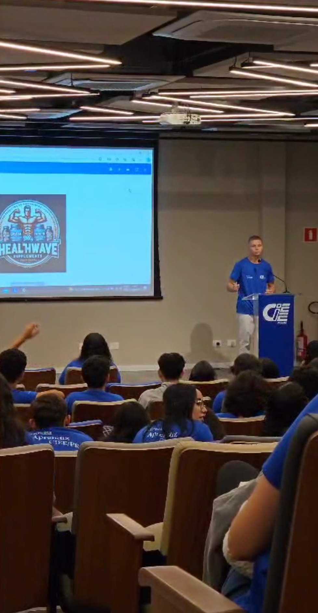
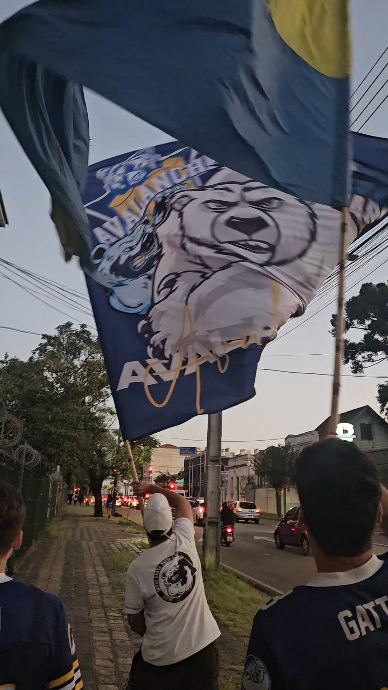

> "A vida é igual a andar de bicicleta. Para manter o equilíbrio é preciso se manter em movimento." -Albert Einstein
> [1] Sobre Mim
> [2] Objetivo
> [3] Por que a Bosch?
> [4] Soft Skills
> [5] Hard Skills
> [6] Formações
> [7] Linha do Tempo
> [8] Hobbys e Interesses
> [9] Família
> [10] Contatos
> Digite o número para saber mais:
> SOBRE MIM: Me chamo Pablo, tenho 17 anos, moro em Curitiba no bairro CIC e atualmente sou estudante de Automação Industrial na UTFPR. Sou muito otimista e sempre gosto de ver o lado bom das coisas, gosto muito de passar tempo com minha família e amigos. Sou um entusiasta de jogos e tecnologia e estou sempre buscando aprender mais sobre.
Digite '0' para retornar ao menu.
> OBJETIVO: Atuar como aprendiz de manufatura avançada na Bosch, para transformar meu entusiasmo por tecnologia em experiêcia prática, contribuindo com muita dedicação e vontade de aprender.
Digite '0' para retornar ao menu.
> POR QUE A BOSCH: A Bosch é uma empresa que representa inovação, qualidade e tecnologia de ponta. Me identifico muito com seu compromisso com a excelência e com o desenvolvimento sustentável. Além disso, é uma empresa que oferece oportunidades reais de desenvolvimento profissional, aprendizado constante e crescimento na área em que tenho o sonho de trabalhar: a área da indústria. Vejo na Bosch o lugar ideal para me tornar um profissional qualificado, preparado para os desafios do futuro e capaz de contribuir com dedicação e competência.
Evento Bosch Portas Abertas
Observando os produtos
Entendendo as máquinas
Eu e meu primo colaborador da Bosch
Clube da bosch
Digite '0' para retornar ao menu.
> SOFT SKILLS: Resiliência | Organização | Raciocínio Lógico | Comprometimento com resultados | Trabalho em equipe | Curiosidade/Vontade de aprender | Adaptabilidade
Digite '0' para retornar ao menu.
> HARD SKILLS: Nível intermediário em Excel | Nível básico em AutoCAD | Lógica de Programação: Tenho compreensão dos princípios fundamentais de algoritmos e estruturas de dados | Linguagens de Programação: Conhecimento básico em C e Python. | Inglês nível - A2
Digite '0' para retornar ao menu.
> FORMAÇÕES: Atualmente estou cursando Automação Industrial na UTFPR - Noturno | Concluí o Ensino Médio integrado ao Técnico em Administração | Me formei no curso de aprendiz administrativo no CIEE/PR
Primeiro dia na UTFPR
Formatura do Ensino Médio com meu pai e minha mãe

Imagem do auditório do CIEE/PR
Digite '0' para retornar ao menu.
2007
Primeiros anos
2011
Prézinho
2017
Ensino fundamental
2022
Ensino médio
2023
Primeiro emprego na Racks Refrigeração
2024
Formatura do ensino médio
2025
Aprovação na UTFPR

2025
Foto atual
Digite '0' para retornar ao menu.
> HOBBYS E INTERESSES: Tenho como principais hobbies a corrida de rua e os jogos online competitivos. Também aprecio muito momentos em família jogando cartas, sinuca ou jogos de tabuleiro. Tenho grande interesse pelas áreas de engenharia e gosto de estudar temas como história, curiosidades de matemática, elétrica e computação. Sou um entusiasta do mundo automotivo e procuro sempre me manter atualizado sobre novidades e tendências do setor. Além disso, gosto de futebol e sou torcedor apaixonado do São Paulo Futebol Clube | Digite '0' para retornar ao menu.
Corrida de rua
Jogando WAR com meu sobrinho
Jogando sinuca com meu pai e meu tio
Digite '0' para retornar ao menu.
> FAMÍLIA: E agora a parte mais importante, a minha família. É com eles que aprendi o valor da responsabilidade, do respeito e da dedicação. Tudo o que conquisto é por eles que sempre me apoiaram em tudo, são eles que me motivam a continuar sempre buscando o melhor.